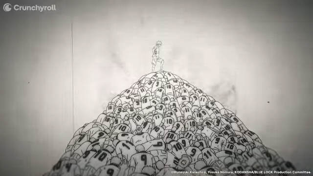

¿Qué es Blue Lock?
Blue Lock es el experimento que destruirá el fútbol egoísta... para crear al delantero absoluto.
El proyecto que cambiará el fútbol japonés para siempre.
Blue Lock es el experimento que destruirá el fútbol egoísta... para crear al delantero absoluto.
Un programa de entrenamiento radical donde 299 jóvenes talentos son arrancados de sus equipos mediocres y encerrados en una prisión futbolística. Aquí no hay lugar para el trabajo en equipo mediocre. Sólo uno sobrevivirá.
El objetivo: forjar al delantero más egoísta, hambriento y letal del mundo. Un depredador que juegue para sí mismo, que devore a sus rivales y que lleve a Japón a la cima del fútbol mundial.
